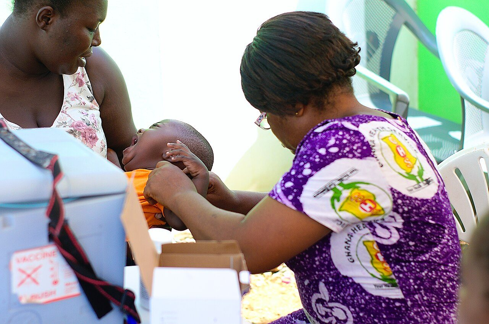

Enter your child's birth date to see which vaccines are due next — and never miss a dose again.
Pick your child's birth date. The checker shows the next due vaccines from Pakistan's routine childhood schedule.
This is a general guide based on Pakistan's routine EPI schedule. Your doctor confirms the exact plan at the visit, especially if any dose was delayed.

The ages below follow Pakistan's routine immunization schedule. Bring the vaccination card to every visit.
| Age | Vaccines | Protects against |
|---|---|---|
| At birth | BCG, OPV-0 | Tuberculosis, polio |
| 6 weeks | OPV-1, Pentavalent-1, PCV-1, Rotavirus-1 | Polio, diphtheria, tetanus, hepatitis B, pneumonia, diarrhoea |
| 10 weeks | OPV-2, Pentavalent-2, PCV-2, Rotavirus-2 | Second doses of the same |
| 14 weeks | OPV-3, Pentavalent-3, PCV-3, Rotavirus-3 | Third doses of the same |
| 9 months | Measles-1, Typhoid (TCV) | Measles, typhoid |
| 15 months | Measles-2 | Measles (second dose) |
| 4–5 years | DTaP / Td booster, OPV booster | Diphtheria, tetanus, polio boosters |
If a dose was missed, it is usually not too late — book a visit and the clinic will make a catch-up plan.
Book any vaccination visit and we remind you on WhatsApp before the next due date — free, always.
Book a Vaccination Visit